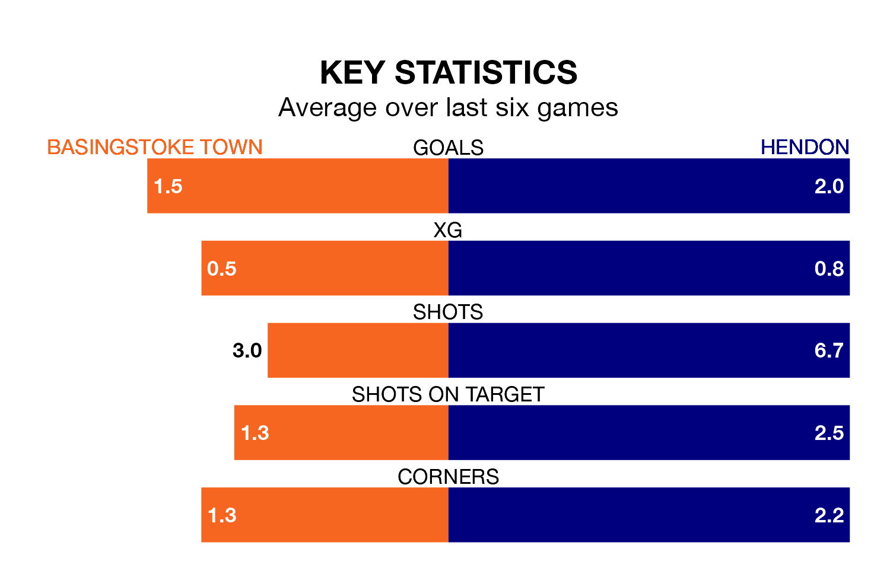

Basingstoke Town host Hendon on Saturday on the back of three consecutive wins in the Southern League Premier South.
Basingstoke have picked up 15 points from their last six games, and they face a Hendon side who lost their last match, and have collected seven points from the last possible 18.
With 54 goals in 31 games so far this season, Hendon are scoring at the league's average rate with 1.7 goals per game. And they are conceding fewer than average, letting in 50 goals at a rate of 1.6 per game.
Basingstoke are also average scorers, with 1.7 goals per game. They have conceded 2.1 goals per game.
The away side are ninth in the table after 31 games, of which they have won 11 and drawn 11, earning 44 points.
Town are two places behind Hendon in 11th, with 12 wins and seven draws putting them on 43 points.
Basingstoke's last match was on February 24, a 1-0 win against Plymouth Parkway.
Hendon lost 1-0 against Chesham United last time out, on March 2.
Updated: 09:34 (UTC), 08/03/24